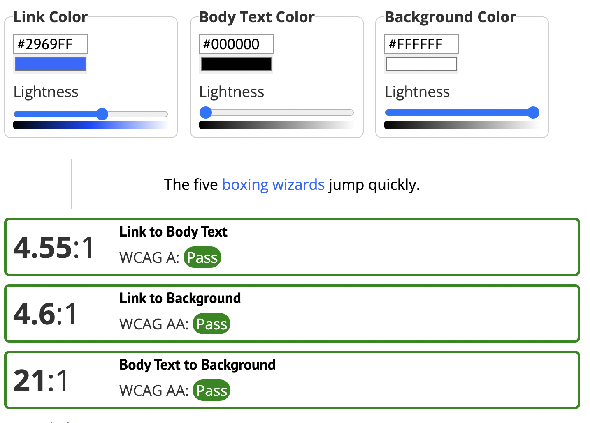
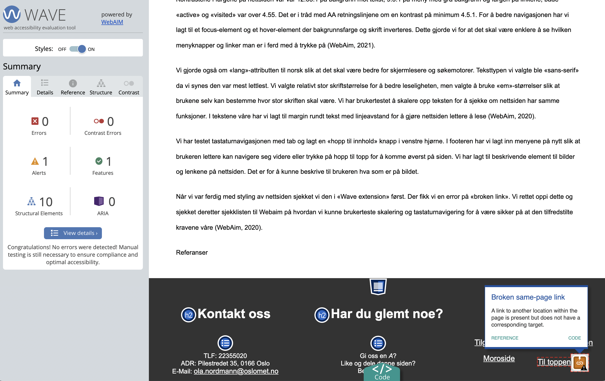

Tilgjengelighet
Inkluderende Design
I denne oppgaven har vår prioritet vært å utforme en nettside med et inkluderende design for alle. Dette er noe vi har hatt som hovedprioritet i valg av farge og utforming både på mobilutgaven og nettsiden. Vårt mål gjennom oppgaven var å tilfredsstille kravene til Web Content Accessibility guidelines (WCAG 2.1) sine retningslinjer for å få AA sertifisering. Vi har lagt ved noen av bilde fra testene vi utførte for å sjekke om vi tilfredsstilte kravene (Legg link til WCG2.1).
Vi begynte med å utforme mobilsiden der vårt fokus var på høy kontrast mellom skrift og bakgrunn, derfor falt valget på svart, grått og hvitt. Vi valgte et enkelt design som vi mener er lett å navigere. Vi lagde menyboksene slik at de dekket hele skjermen på mobil for å gjøre det lettere å treffe riktig knapp.
Kontrastene i fargene på nettsiden vår var 12:63:1 på bakgrunn mot tekst, 9:3:1 på meny med grå bakgrunn og fargen på linkene; både «active» og «visited» var over 4.55. Det er i tråd med AA retningslinjene om en kontrast på minimum 4.5.1. For å bedre navigasjonen har vi lagt til et focus-element og et hover-element der bakgrunnsfarge og skrift inverteres. Dette gjorde vi for at det skal være enklere å se hvilken menyknapper og linker man er i ferd med å trykke på (WebAim, 2021).
Vi gjorde også om «lang»-attributten til norsk slik at det skal være bedre for skjermlesere og søkemotorer. Teksttypen vi valgte ble «sans-serif» da vi synes den var mest lettlest. Vi valgte relativt stor skriftstørrelse for å bedre leseligheten, men valgte å bruke «em»-størrelser slik at brukene selv kan bestemme hvor stor skriften skal være. Vi har brukertestet å skalere opp teksten for å sjekke om nettsiden har samme funksjoner. I tekstene våre har vi lagt til margin rundt tekst med linjeavstand for å gjøre nettsiden lettere å lese (WebAim, 2020).
Vi har testet tastaturnavigasjonen med tab og lagt en «hopp til innhold» knapp i venstre hjørne. I footeren har vi lagt inn menyene på nytt slik at brukeren lettere kan navigere seg videre eller trykke på hopp til topp for å komme øverst på siden. Vi har lagt til beskrivende element til bilder og lenkene på nettsiden. Det er for å kunne beskrive til brukeren hva som er på bildet.
Når vi var ferdig med styling av nettsiden sjekket vi den i «Wave extension» først. Der fikk vi en error på «broken link». Vi rettet oppi dette og sjekket deretter sjekklisten til Webaim på hvordan vi kunne brukerteste skalering og tastaturnavigering for å være sikker på at den tilfredstilte kravene våre (WebAim, 2020). 
Referanser